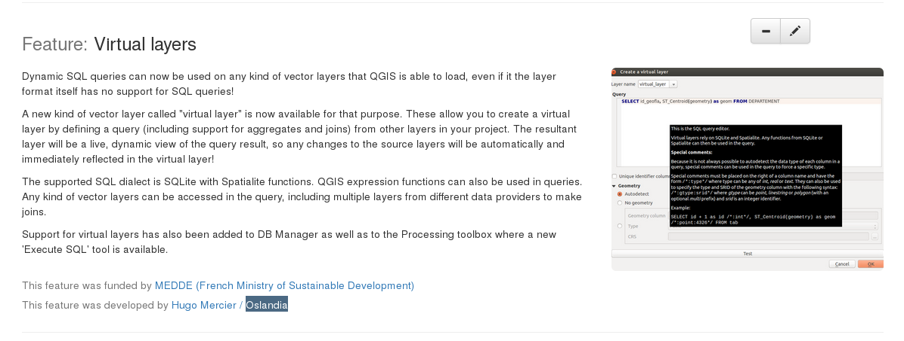

API QGIS (1)

API QGIS (2)
map
- QgsMapCanvas : widget d'affichage de la carte
- QgsMapRenderer / QgsMapRendererJob : rendu de la carte
- QgsMapTool : intéractions utilisateur avec la carte (déplacement, identification de feature, ...)
- QgsMapLayer : les couches (vector, raster, ...)
feature
- QgsFeature : objets géographiques
- QgsFeatureRenderer : rendu de feature
- QgsGeometry : géometrie (point, polygone, ...)
API QGIS (3)
divers
- QgsProject : ouverture / lecture / ... de fichier .qgis
- QgsLayerTreeGroup : arbre des couches
- QgisInterface : point d'entrée des plugins Python
Beaucoup de classes!!
Dépôt QGIS (1)

Dépôt QGIS (2)
Racine
- ci : continuous integration (scripts travis pour linux, OSX, QT4, QT5)
- cmake : scripts CMake
- debian - mac - ms-windows - rpm : le nécessaire pour faire les packages
- doc : auteurs, contributeurs, ...
- i18n : langues
- images/themes/default : icones, ...
- python : binding (.sip), ...
- scripts : des scripts utiles (pre-commit.sh, astyle.sh, ...)
- src : les sources QGIS
- tests : le nécessaire pour les tests unitaires (sources, données de tests, ...)
Dépôt QGIS (3)
src : les répertoires principaux
- app : maptools "spécifiques" (pin/unpin labels, ...), le main!
- core : expression, maplayer, renderer, datadefined, ...
- customwidgets : les widgets custom réutilisables (QgsSpinBox)
- gui : les maptools de base, mapcanvas, messagebar, attributeform, ...
- plugins : les plugin C++
- providers : les dataproviders (memory, postgres, virtual, ...)
- ui : les fichiers .ui
QGIS Standalone (1)
Application sans GUI
#include <QApplication>
#include <qgsapplication.h>
int main(int argc, char *argv[])
{
QApplication app(argc, argv);
QgsApplication::setPrefixPath("/usr/local", true);
QgsApplication::initQgis();
QgsApplication::exitQgis();
return 0;
}
QGIS Standalone (2)
Application avec GUI
#include <QApplication>
#include <qgsapplication.h>
#include <qgsmapcanvas.h>
int main(int argc, char *argv[])
{
QApplication app(argc, argv);
QgsApplication::setPrefixPath("/usr/local", true);
QgsApplication::initQgis();
QgsMapCanvas canvas;
canvas.show();
int rc = app.exec();
QgsApplication::exitQgis();
return rc;
}
QGIS Standalone (3)
EXERCICE 4

Intégration continue
Lors d'une PR, les builds sont réalisés sur plusieurs OS : Linux, OSX et Windows.
http://dash.orfeo-toolbox.org/index.php?project=QGIS
- Un build va échouer si :
- il y a des erreurs/warnings de compilation
- des tests unitaires ne passent pas
- il y a un problème dans le binding Python
- la documentation est incomplète
- ...
QGIS documentation (1)
header
/***************************************************************************
<filename>
begin : <month> <year>
copyright : (C) <year> <Prenom> <Nom>, <Entrprise>
email : <mail>
***************************************************************************/
/***************************************************************************
* *
* This program is free software; you can redistribute it and/or modify *
* it under the terms of the GNU General Public License as published by *
* the Free Software Foundation; either version 2 of the License, or *
* (at your option) any later version. *
* *
***************************************************************************/
QGIS documentation (2)
doxygen
/** Description de la méthode.
* @param nom description du paramètre1
* @param nom description du paramètre2
* @return description de la valeur de retour
* @note added in QGIS 2.XX
*/
Documenter tout ce qui est public ou protected au minimum!!
QGIS documentation (3)
https://github.com/qgis/QGIS-Documentation
Documentation à compléter lors de l'ajout d'une feature!
[FEATURE] My new feature : création automatique d'issue

QGIS documentation (3)
changelog
QGIS unit tests (1)
C++ : unit class test
#include <QtTest/QtTest>
class TestQgsMyClass : public QObject
{
Q_OBJECT
public:
TestQgsMyClass() {}
private slots:
void initTestCase(); // executed before the first test function
void cleanUpTestCase(); // executed after the last test function
void testfunction1();
void testfunction2();
};
QTEST_MAIN( TestQgsMyClass )
QGIS unit tests (2)
C++ : QGIS environment
void TestQgsMyClass::initTestCase()
{
QgsApplication::init();
QgsApplication::initQgis(); // if needed
}
void TestQgsMyClass::cleanUpTestCase()
{
QgsApplication::exitQgis(); // if needed
}
void TestQgsMyClass::testfunction1()
{
QVERIFY( boolean predicate );
QCOMPARE( checked_value, waited_value );
QgsRenderChecker checker;
checker.compareImages(....);
}
QGIS unit tests (3)
Python : unittest
from qgis.testing import (start_app,
unittest)
from utilities import unitTestDataPath
start_app()
TEST_DATA_DIR = unitTestDataPath()
class TestQgsClass(unittest.TestCase):
def __init__(self, methodName):
unittest.TestCase.__init__(self, methodName)
def test1(self):
self.assertEqual(...)
self.assertTrue(....)
self.assertAlmostEqual(....)
if __name__ == '__main__':
unittest.main()
QGIS unit tests (4)
Python : interface
Mock object pour QgisInterface : python/testing/mocked.py
from qgis.testing.mocked import get_iface
my_iface = get_iface()
QGIS Python binding (1)
SIP
Recopie du .h sauf :
- mot clé override
- implémentation
- les includes
- les éléments private
En plus :
class QgsMapRendererJob : QObject
{
%TypeHeaderCode
#include <qgsmaprendererjob.h>
%End
........
QGIS Core-Dev
EXERCICE 5